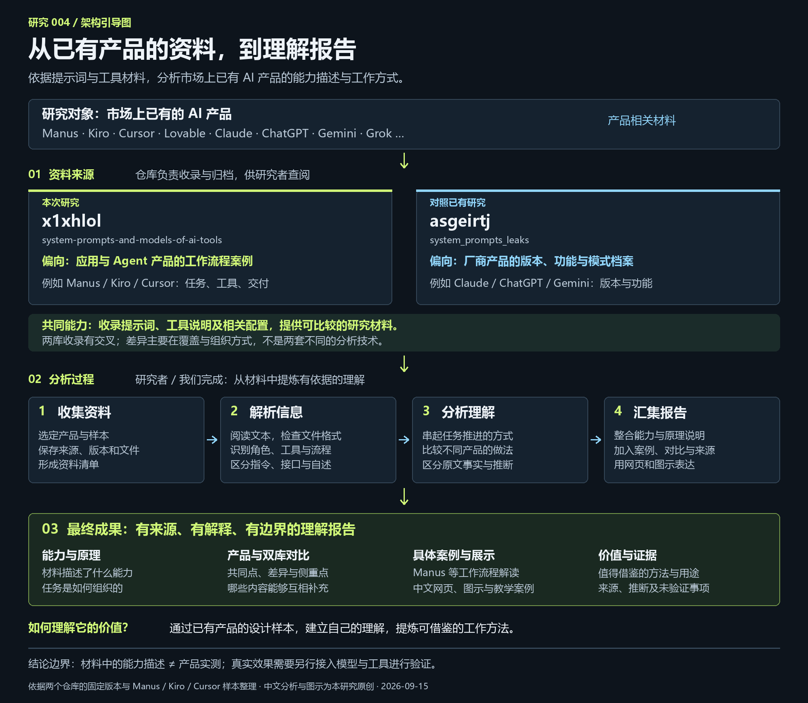

{kind=link}
{kind=link}
本次研究应用与 Agent 案例较突出
x1xhlol
system-prompts-and-models-of-ai-tools
ManusKiroCursorLovablev0
适合看不同产品如何组织任务、选择工具和交付结果。
工作指令工具接口模式配置
00 / 架构引导
收集 Manus、Kiro、Cursor、Lovable 等已有 AI 工具的相关资料，经研究者解析与分析，汇集成产品理解报告。对我们的实际价值，仍需后续研究与验证。

01 / 双库对照
2026.09.15 · 固定版本研究两个库提供同一类研究资料。仓库负责收录与归档，研究者完成解析、分析和报告；差异主要在收录对象、细分程度与版本覆盖。
system-prompts-and-models-of-ai-tools
适合看不同产品如何组织任务、选择工具和交付结果。
system_prompts_leaks
适合看产品在不同版本、功能和模式下的工作规则。
| 维度 | x1xhlol | asgeirtj |
|---|---|---|
| 归档方式 | 多按产品目录整理 | 多按厂商、产品、功能、版本整理 |
| 常见材料 | TXT 提示词、JSON 工具定义、YAML 快照 | Markdown 为主，部分 Skills 带脚本和组件 |
| 鲜明案例 | Manus 执行循环、Kiro 分阶段开发 | Claude 子 Agent、Skills、历史及官方公开样本归档 |
| 重合部分 | 都收录助手和编程 Agent；同名产品的样本可能来自不同时间与环境 | |
| 可运行程度 | 主要供阅读分析，无完整产品运行环境 | 主要供阅读分析；部分附带代码仍需单独验证 |
| 已验证的提升 | 本研究未进行真实模型效果对照实验，不能声称提高成功率 | |
02 / 收录能力
本次 x1xhlol 快照共有 111 个跟踪文件。目录数不等于独立产品数，文件数不代表能力强弱。
助手应该怎么回答，什么情况下继续执行，完成时交付哪些东西。
可以提炼：回答规范、完成标准有哪些工具，需要什么参数，遇到什么问题该选择哪个工具。
可以提炼：搜索与读取的选择规则从需求走到计划与行动，再读取执行结果，决定继续还是交付。
可以提炼：阶段产物、反馈处理真正执行任务仍需要模型、实际工具和运行程序。仓库名称中的 “models” 不代表提供模型权重。
03 / 交互案例
教学演示 · 无模型调用切换案例，逐步看“规则 → 行动 → 结果”。下方中文任务与产物由本研究编写，用于解释原文。
这展示的是规则的作用方式，不是原产品实测成绩。页面中的任务、文件内容和执行反馈均为预设教学数据。
提示词影响选择；工具完成实际操作；运行程序管理会话、状态和权限。模型收到结果后，继续判断下一步。
04 / 价值与意义
模型、指令、工具与运行程序的分工已研究过，继续沿用已有解释与展示。
打开已有研究 ↗Manus 的反馈循环、Kiro 的阶段产物、Cursor 的工具选择，为自己的助手提供不同案例。
回到交互案例 ↑固定模型、工具和任务，只改变一条规则，记录成功率、耗时与人工介入，再决定是否使用。
下一阶段研究 · 尚未执行它提供了已有 AI 产品的资料与研究线索。对我们是否有实际价值、哪些做法值得借鉴，仍需后续研究与验证。
05 / 证据与验证范围
文件能按标准 JSON 解析。另 4 个含额外文本或格式问题，导入工具前需要整理。
这是文件语法检查，不是工具运行测试。